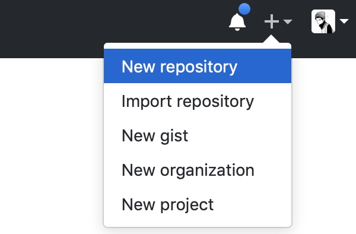
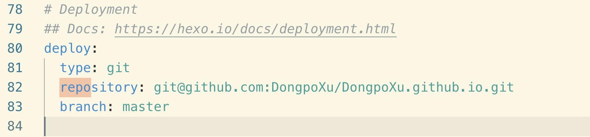
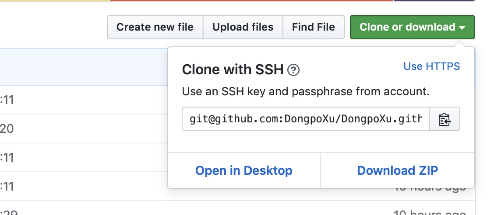

Xu-Blog = Hexo + GithubPages + 个人域名
前言
正在使用 Hexo，本着“授人以鱼，不如授人以渔”的理念，将自己在使用 Hexo 搭建博客的过程整理成使用教程，分享给大家。
另外，个人成品小站 xudongpo.cn ，如果你也想亲力亲为经营一个属于自己的个人博客，那就继续往下看吧^_^
介绍
Hexo 是一个快速、简洁且高效的博客框架。支持 Markdown 语法解析文章，在几秒内，即可利用靓丽的主题生成静态网页。
GitHub 是一个面向开源及私有软件项目的托管平台，它提供的 GitHubPages 是一个静态站点托管服务。
创建 Github 仓库
创建 Github
假定已经有 Github 账户。
创建 io 仓库
- 点击创建仓库
 - 项目必须要遵守格式：账户名.github.io，不然接下来会有很多麻烦。并且需要勾选 Initialize this repository with a README
- 在建好的项目右侧有个 settings 按钮，点击它，向下拉到 GitHub Pages，你会看到那边有个网址，访问它，你将会惊奇的发现该项目已经被部署到网络上，能够通过外网来访问它。如果没有，你可以直接在浏览器输入自己仓库名，在浏览器进行访问，能访问成功说明也 OK。
安装 Hexo
安装前提
安装 Hexo 相当简单。然而在安装前，先检查是否已安装下列应用程序：
- Node.js
- Git
分别输入 node -v 和 npm -v，会返回对应的版本。

安装
如果您的电脑中已经安装上述必备程序，那么只需要使用 npm 即可完成 Hexo 的安装。
- npm install hexo -g
- 安装 Hexo 完成后，输入 hexo -v 检查 hexo 版本
- 在自己认为合适的地方创个文件夹，然后通过命令行进入到该文件夹里面
- 再执行下列命令，Hexo 将会初始化文件夹
- hexo init
- npm install
此时，我们的环境基本就搭建完毕了
接下来我们输入 hexo g 生成博客所需文件
然后输入 hexo s 启动本地服务器，访问提示网址，博客页面展现出来了
发布博客到 Github
- 配置 Deployment，在其文件夹中，找到_config.yml 文件，修改 repo 值（在末尾）

- repo 值的获取位置，需要把 Clone 方式切换成 SSH 形式，然后复制地址就可以了

在生成以及部署文章之前，需要安装一个扩展：npm install hexo-deployer-git
使用命令 hexo d 就可以将博客页面部署到 Github 上了
部署成功后访问你的地址：http://dongpoxu.github.io。如果看到之前在本地部署一样的页面，说明我们就部署成功啦！
主题更换
在Hexo 官网有很多主题供大家选择，并且每个主题都有自己对应的说明文档。
安装主题
- git 克隆主题
git clone "https://github.com/iissnan/hexo-theme-next themes/next" - 修改博客根目录下的_config.yml 中的 theme 属性，将其设置为你下载下来的主题名。
- theme: zhutiming
- 配置主题
- 修改主题目录下的_config.yml 配置文件
- 主题发布
- hexo clean
- hexo g
- hexo d
成功后再次访问地址，查看效果，页面会有缓存，需要多刷新几次才行。
绑定独立域名
因为 Hexo 个人博客是托管在 Github 之上，每次访问都要用 dongpoxu.github.io 这么一个长串的域名来访问，显得非常繁琐。
这个时候我们可以购买一个域名，设置 DNS 跳转，通过域名即可访问我们的个人博客。并且 Github pages 是支持域名绑定的。
购买域名
阿里云，腾讯云啥的买个自己中意的域名
域名解析
Ping 以下自己的http://dongpoxu.github.io地址，获得对应的 IP 地址。
在域名解析控制台添加 CNAME 和 A 解析记录，使 www 网址和 @(即本身) 都指向自己的 Github page
按以下表格分别添加 A 和 CNAME 两条解析记录：
| 类型 type | 主机 host | 指向 points to | TTL(Time To Live) |
|---|---|---|---|
| A | @ | github page 的 IP 地址 | 600 |
| CNAME | www | github page 的网址 | 600 |
| A 记录：用来指定域名的 IPv4 地址，如要将域名指向一个 IP 地址，添加 A 记录 CNAME：如要将域名指向另一域名，再由该域名提供 ip，添加 CNAME 记录 | www：解析后域名为 www.yucicheung.me @：解析主域名 yucicheung.me *：泛解析，匹配其他所有域名，*.yucicheung.me | 对于 A 记录:要指向 IP 地址 对于 CNAME:要指向一个域名 | 指地方 dns 缓存域名记录的时间,缓存失效后会再次获取 600:建议采用 600 60:如果经常修改 IP 可用(修改可快速生效),长期使用略影响解析速度 3600:如果 IP 极少变动(一年几次),可选择 3600,解析速度快 |

添加 github 仓库的域名解析记录
按以下命令在自己的 github 仓库中添加 CNAME 文件，其中填入购买的域名。或者在仓库的 settings 中设置 Custom Domain 设置好自己的域名，github 会自动添加 CNAME 文件。
~ touch CNAME
~ echo ‘yucicheung.me’> CNAME
- 稍等一下就可以通过域名访问 dongpoxu.github.io 了，但是这时只能通过 http 访问自定义域名而非 https
通过 HTTPS 访问自定义域名
将 Settings 里面的 Enforce HTTPS 勾选就可以了
- 设置完成后图